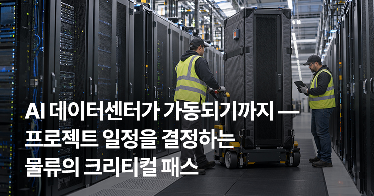
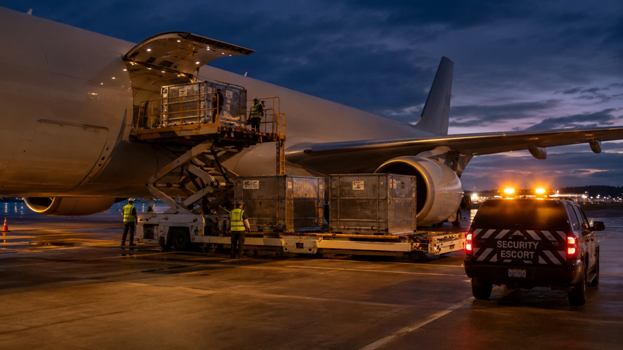

작성: 첼로스퀘어(삼성SDS 물류)최종 업데이트: 2026년 7월 29일
English edition:
Getting an AI Data Center to Go Live — The Logistics Critical Path That Sets the Schedule
전력설비부터 GPU까지, 서로 다른 물류가 하나의 일정으로 묶인다

핵심 요약
AI 데이터센터의 가동 일정은 GPU만으로 결정되지 않습니다. 전력·냉각 같은 장기 조달이 필요한 기반설비를 적기에 확보하고 현장 공정에 맞춰 반입해야 하며, 설비군마다 해상 중량화물부터 고보안 항공운송까지 서로 다른 물류 설계가 필요합니다. 이 글에서 '가동'은 기반설비 구축과 장비 반입·설치·시운전을 거쳐 데이터센터가 실제 운영을 시작할 수 있는 상태를 뜻합니다.
| 설비군 | 대표 화물 | 주요 물류 방식 | 핵심 난제 |
|---|---|---|---|
| 전력 인프라 | 초고압 변압기·스위치기어 | 해상 중량화물·프로젝트 물류 | 장기 발주·초중량 내륙운송 |
| 냉각·기계설비 | CDU·칠러·열교환 설비 | 해상운송·육상 특수운송 | 공정 연계·정밀 취급 |
| 네트워크·케이블 | 스위치·광모듈·케이블 | 대량 해상운송·항공 특급 | 대량 화물과 고가 화물의 혼재 |
| 서버·완제품 랙 | 수랭식 서버 랙·캐비닛 | 해상·내륙 복합운송 | 진동 관리·현장 반입 순서 |
| 긴급·증설 부품 | GPU·가속기·예비부품 | 고보안 항공운송 | 추적·보안·운영 중단 최소화 |
AI 인프라 투자가 빠르게 확대되면서 데이터센터 건설과 관련 설비 수요도 함께 늘고 있습니다. 주요 하이퍼스케일러들은 2026년에도 AI 인프라를 중심으로 대규모 자본지출을 이어가고 있으며, 전망치는 발표 기관과 시점에 따라 상당한 편차를 보입니다.
그러나 일부 대형 프로젝트에서는 건물을 짓는 속도보다 전력 확보와 일부 핵심설비 조달이 더 오래 걸릴 수 있습니다. 실제로 미국 일부 시장에서는 신규 전력 확보에 3~4년이 걸려 시설 건설 자체보다 길어지는 사례가 보고됩니다. 따라서 가동 시점은 건설 공정만이 아니라 설비별 발주 시점과 운송·반입 계획에 의해 결정됩니다.
이 글은 AI 데이터센터를 장비 목록이 아니라, 가동 시점을 결정하는 조달·물류의 크리티컬 패스로 살펴봅니다. 한 가지 전제를 분명히 해둘 필요가 있습니다. 리드타임이 길다고 해서 모든 설비가 항상 병목이 되는 것은 아닙니다. 다만 해당 장비의 발주·운송·반입이 후속 설치와 시운전을 지연시키는 순간, 그 장비는 프로젝트의 크리티컬 패스에 올라섭니다. 가장 비싼 장비가 아니라, 제때 확보하지 못해 후속 공정을 막는 설비가 일정을 늦춥니다.

1. 가장 먼저 발주해야 하는 것 — 전력 인프라
전력 인프라의 핵심은 '현장에 가장 먼저 도착한다'가 아니라 가장 먼저 조달 결정을 내려야 한다는 데 있습니다. 대형 전력 변압기는 대표적인 장기 조달 품목입니다. Wood Mackenzie에 따르면 변압기 평균 리드타임은 2021년 약 50주에서 2024년 약 120주로 늘었고, 대형 substation power·GSU 변압기는 약 80~210주에 이릅니다. 제품·시장·제조사에 따라 수년의 대기 기간이 발생할 수 있어, 데이터센터 프로젝트에서는 초기 단계부터 조달 일정을 확보해야 합니다. 비용 비중과 관계없이 전력 체인의 핵심 설비가 늦어지면 후속 설치와 시운전이 지연되기 때문에, 발주 우선순위가 가장 높습니다. 특히 미국은 대형 전력 변압기의 해외 의존도가 높은 시장입니다. 미국 에너지부(DOE)는 2019년 60MVA 초과 신규 변압기 수요의 80% 이상이 수입됐다고 분석했으며, Wood Mackenzie도 2025년 미국 power transformer 공급의 약 80%가 수입으로 충당될 것으로 추산했습니다. 그만큼 해외 공급망과 초장기 리드타임을 함께 관리하는 물류 역량이 조달 일정을 좌우합니다.
물류 관점에서 초고압 변압기는 대당 최대 수백 톤에 이르는 초중량·비정형 화물로, 표준 컨테이너 운송이 아니라 프로젝트 물류의 영역입니다. 일반적으로 해상은 브레이크벌크·중량물선으로 운송하고, 육상은 화물 중량과 도로 조건에 따라 다축·모듈러 트레일러 등 특수운송 장비를 사용하며, 통행 허가·호송 차량·교량 하중 분석·야간 이동 같은 절차가 따라붙습니다. 항만 중량 하역부터 원격지 현장까지의 내륙 특수운송을 하나의 일정으로 연결·조율하는 것이 관건입니다.
결국 전력 인프라 물류는 단순 운송이 아니라, 가동일에서 역산한 초장기 리드타임을 관리하는 프로젝트 매니지먼트에 가깝습니다.
2. AI 데이터센터를 다르게 만드는 것 — 냉각·기계설비
냉각은 일반 데이터센터와 AI 데이터센터의 물류를 가르는 결정적 요소입니다. AI 워크로드가 랙당 전력밀도를 크게 끌어올리면서, 대표적인 고집적 랙인 NVIDIA GB200 NVL72는 랙 전체 기준 약 120kW를 소비합니다. 기존 공랭 중심 설비만으로는 이처럼 높은 열밀도를 처리하기 어려워지면서, 직접칩냉각 같은 액체냉각 적용이 빠르게 확대되고 있습니다. 골드만삭스는 액체냉각 AI 서버 비중이 2024년 15%에서 2025년 54%, 2026년 76%로 높아질 것으로 전망한 바 있습니다(실측이 아닌 전망치이며, AI 서버 기준 수치로 전체 데이터센터 신축 비율과는 다릅니다).
이 전환은 물류에 그대로 반영됩니다. 냉각분배장치(CDU)·칠러·열교환 설비는 크기와 중량, 현장 설치 조건에 따라 일반 해상운송부터 중량물·OOG(규격 초과 화물) 프로젝트 운송, 육상 특수운송까지 서로 다른 방식이 적용되는 화물입니다. 게다가 이 설비들은 건물·기계 공정과 맞물려 서버 반입 전에 설치·시험돼야 하는 경우가 많습니다. 즉 냉각·기계설비는 서버보다 '뒤'가 아니라, 서버가 들어올 조건을 먼저 완성하는 기반설비입니다. 냉각 용량을 확대하는 증설 프로젝트에서는 이러한 냉각 장비의 추가 조달·운송이 발생할 수 있습니다.
3. 가동 조건을 완성하는 연결 — 네트워크·케이블
네트워크 구간의 특징은 하나의 카테고리 안에 상반된 물류가 공존한다는 점입니다. 스위치와 광모듈 같은 고가·소형 장비는 납기가 촉박할수록 항공 비중이 높아지고, 광케이블·동축/전력 케이블·커넥터·패치패널처럼 대량 조달되는 품목은 해상운송을 활용하기 쉽습니다. 같은 '네트워크 장비'라도 화물 특성과 납기에 따라 운송 설계가 갈리는 것입니다.
이 섹션은 초기 구축용 네트워크 장비를 중심으로 합니다. 가동 이후의 장애 대응·증설용 교체 부품은 뒤(5번)에서 따로 다룹니다.

4. 대량으로 배치되는 것 — 서버·완제품 랙의 정밀 복합운송
서버·컴퓨트는 물량과 정밀함을 동시에 요구합니다. GPU·메모리·네트워크 장비가 장착돼 랙 단위로 통합 출하되는 수랭식 캐비닛은 대형·고가이면서 충격·기울기·진동에 민감합니다. 랙 인클로저(랙 외함)도 이 구간에서 함께 다뤄집니다. 서버 랙과 캐비닛은 생산·통합 거점에서 데이터센터 현장까지 해상 또는 항공과 내륙운송을 조합해 이동하며, 화물 가치·중량·납기·현장 반입 일정에 따라 운송모드가 달라집니다. 각 구간의 환적·보관·최종 트럭킹이 하나의 운영 계획으로 연결돼야 합니다.
특히 하이퍼스케일 현장에서는 반입 순서가 물류의 핵심입니다. 데이터센터는 보통 기초 → 구조 → 전기·기계(MEP) → 시운전(커미셔닝) 순의 단계로 지어지고, 장비는 이 공정에 맞춰 순차적으로 반입돼야 합니다. 대규모 캠퍼스에서는 짧은 기간에 다수의 장비 반입이 집중될 수 있어, 현장 인근 스테이징(임시 적치) 창고에서 반입 순서를 조율하고 재고를 관리하는 역량이 완공 지연을 막는 결정적 요소가 됩니다.
이 구간은 초중량·비정형 프로젝트 물류라기보다, 고가·정밀 화물을 공정에 맞춰 정확히 흘려보내는 정밀 복합운송의 성격이 강합니다.

5. 가장 빠르게 움직여야 하는 것 — GPU·가속기·긴급 예비부품
구축 막바지부터 가동 이후까지 물류는 계속됩니다. 설치 지연, 장애 대응, 용량 증설에 필요한 핵심 부품은 운영 중단과 일정 차질을 줄이기 위해 고보안 항공운송으로 움직일 수 있습니다.
이 섹션은 랙 단위 대량 반입(4번)과 구분해, 개별 공급되는 고가 부품과 긴급·증설 수요에 초점을 맞춥니다. GPU·가속기 같은 부품은 단가가 높고 부피가 작으며 도난·손상 리스크가 커, 납기가 촉박하거나 높은 보안 수준이 요구되는 경우 항공운송에 보험·보안·추적을 결합한 운송 방식을 활용할 수 있습니다. 업계에서는 대규모 AI 서버·GPU 랙을 전세 화물기로 운송하는 사례도 보고됩니다. 교체용 광모듈·트랜시버처럼 초기 구축 때는 대량으로 다루던 품목도, 장애·증설 국면에서는 긴급 항공 대상이 될 수 있습니다.
(반도체 제조장비나 메모리 생산라인 물류는 데이터센터 건설과는 다른 공급망이므로 이 글에서는 다루지 않습니다.)
결론 — 데이터센터 물류는 '오케스트레이션'이다
AI 데이터센터 하나가 가동되려면 전력·냉각·네트워크·서버·긴급부품이 서로 다른 조달 기간과 운송 방식, 반입 조건을 갖고도 하나의 프로젝트 일정으로 묶여야 합니다. 장기 발주가 필요한 설비를 가장 먼저 확정하고, 기반설비를 구축하고, 연결을 완성하고, 컴퓨트를 배치하고, 가동 이후의 긴급 운영까지 지원하는 흐름이 병렬로 맞물립니다. 어느 하나가 크리티컬 패스에서 어긋나면 전체 가동이 밀립니다.
그래서 데이터센터 물류의 본질은 개별 운송이 아니라 오케스트레이션입니다. 초중량 프로젝트 물류, 정밀 복합운송, 고보안 항공운송, 스테이징과 현장 반입이 하나의 일정으로 맞물릴 때, 물류는 프로젝트를 따라가는 비용이 아니라 가동 시점을 앞당기는 지렛대가 됩니다.
삼성SDS 물류는 해상·항공 국제운송, 내륙운송, 보관 및 프로젝트 물류 역량을 기반으로 대형 인프라 프로젝트의 복잡한 물류 흐름을 지원합니다. 데이터센터 프로젝트에서도 설비별 납기와 현장 일정을 고려한 물류 설계가 중요합니다. 프로젝트 일정에 맞춘 물류가 필요하시다면 상담해 보세요.
자주 묻는 질문 (FAQ)
- Q. 데이터센터 장비는 언제부터 물류 계획을 세워야 하나요?
- 가장 긴 리드타임을 가진 설비의 발주 시점에 맞춰야 합니다. 대형 전력 변압기처럼 조달에 수년이 걸릴 수 있는 품목은 부지·설계가 확정되기 전부터 리드타임을 역산해 발주·운송 계획을 잡는 것이 안전합니다. 물류 계획을 착공 이후로 미루면 이미 크리티컬 패스가 어긋나 있을 수 있습니다.
- Q. 초고압 변압기 같은 초중량 전력기기는 어떻게 운송하나요?
- 표준 컨테이너가 아니라 프로젝트 물류로 다룹니다. 해상은 브레이크벌크·중량물선, 육상은 화물 중량과 도로 조건에 따라 다축·모듈러 트레일러 등 특수운송 장비를 쓰며, 통행 허가·호송·교량 하중 분석·항만 중량 하역·내륙 특수운송을 하나의 계획으로 연결합니다.
- Q. GPU·광모듈 같은 고가 부품은 언제 항공으로 운송하나요?
- 정해진 답은 없고 조건으로 판단합니다. 단가와 물량, 납기 긴급성, 공급 부족 여부, 보험·보안 요건, 그리고 랙에 통합돼 출하되는지 여부가 기준입니다. 개별 공급되는 고가·긴급 부품은 항공 비중이 높지만, 랙 단위로 통합된 대량 물량은 해상·복합운송이 더 적합할 수 있습니다.
- Q. 서버 완제품 랙 운송에서 가장 주의할 점은 무엇인가요?
- 충격·기울기·진동 관리와 현장 반입 순서입니다. 랙은 고가·정밀 화물이라 운송 중 진동 저감이 중요하고, 하이퍼스케일 현장에서는 기초·구조·전기기계·시운전 공정에 맞춰 순차 반입해야 합니다. 현장 인근 스테이징 창고에서 반입 순서를 조율하는 역량이 완공 지연을 좌우합니다.
- Q. 데이터센터 프로젝트 물류는 일반 수출입과 무엇이 다른가요?
- 개별 화물을 '보내는' 일이 아니라, 리드타임이 제각각인 설비들을 하나의 가동 일정에 맞춰 '순서대로 도착시키는' 일입니다. 초중량·비정형 화물, 고보안 화물, 대량 화물이 뒤섞이고, 조달·해상·항만·내륙·스테이징·현장 반입이 하나의 계획으로 연결돼야 한다는 점에서 일반 수출입과 다릅니다.
참고문헌
본문 사실관계의 근거가 된 주요 출처입니다. 2026년 투자 전망치 등 거시 수치는 발표 기관·시점에 따라 편차가 커, 본문에서는 특정 수치 대신 방향성만 반영했습니다. 규제·시황은 발행 시점에 재확인을 권합니다.
- 1. CreditSights, "Tech: Raising Hyperscaler Capex 2026 Estimates"(2026) — 상위 5개 하이퍼스케일러 2026년 CapEx 전망(약 7,500억 달러로 상향, 전년 대비 약 67%). 산업 배경 참고용.
- 2. Wood Mackenzie, "Supply shortages and an inflexible market give rise to high power transformer lead times"(2024. 4.) 및 "Transformer troubles"(2025); U.S. Department of Energy, "Large Power Transformer Resilience Report to Congress"(2024) — 변압기 리드타임(2021년 약 50주 → 2024년 약 120주, 대형 substation power·GSU 약 80~210주) 및 미국 대형 전력 변압기의 높은 수입 의존도(DOE: 2019년 60MVA 초과 신규 변압기 수요의 80% 이상 수입 / Wood Mackenzie: 2025년 미국 power transformer 공급의 약 80% 수입 전망).
- 3. Schneider Electric, "Data center power density / Overcoming power constraints"(2025–2026) — 일부 미국 시장의 신규 전력 확보 기간(3~4년), 고밀도 데이터센터 냉각.
- 4. NVIDIA, "DGX GB200 NVL72 / Rack-scale Systems" 제품 자료 — GB200 NVL72 랙 전력 약 120kW.
- 5. Goldman Sachs 전망(Lombard Odier 인용, 2026) — 액체냉각 AI 서버 비중 2024년 15% → 2025년 54% → 2026년 76%.
- 6. 데이터센터 프로젝트 물류 실무(초중량·비정형 프로젝트 카고, 해상+엔지니어드 도로운송, 진동 민감 서버 랙, 공정 연계 순차 반입, 스테이징) — Omni Logistics, Phoenix Logistics, Crane Worldwide Logistics 등 업계 자료(2025–2026).
- 7. 삼성SDS 첼로스퀘어(Cello Square) — 국제운송·내륙운송·보관·프로젝트 물류 서비스 안내. cello-square.com.
▶ 본 콘텐츠는 AI 데이터센터 물류에 관한 일반적인 정보를 제공하기 위한 것으로, 특정 프로젝트의 조달·운송·규제 자문을 구성하지 않습니다. 프로젝트별 요건은 관련 전문가와 최신 자료를 통해 확인해야 합니다.
▶본 콘텐츠는 사전 동의 없이 2차 가공 및 영리적 이용을 금합니다. © Cello Square (Samsung SDS). All rights reserved.